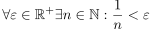
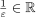
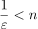
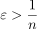
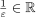

Satz von Eudoxos
1. Satz

1
2. Beweis
Aus dem Archimedischen Axiom folgt, dass für  eine natürliche zahl  existiert, so dass gilt:
existiert, so dass gilt:

2
nach der Umkehrung von Relation bei Bruch auf beiden Seiten(x > y) folgt:

3
Aus dem Archimedischen Axiom folgt, dass für  eine natürliche zahl existiert, so dass gilt:
nach der Umkehrung von Relation bei Bruch auf beiden Seiten(x > y) folgt: